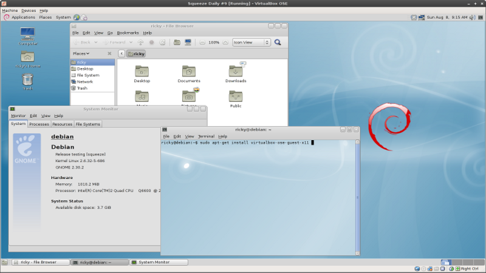

Debian
About Debian
Debian is a free computer operating system. It is composed of software packages released as free and open source software, which includes the GNU OS tools and Linux kernel and is a popular and influential Linux distribution. It is distributed with access to repositories containing thousands of software packages ready for installation and use. Debian can be used on a variety of hardware, from NAS devices to phones, laptops, desktops and servers. It focuses on stability and security and is used as a base for many other distributions like Ubuntu and MintScreen shots

First Thumbnail label
Cras justo odio, dapibus ac facilisis in, egestas eget quam. Donec id elit non mi porta gravida at eget metus. Nullam id dolor id nibh ultricies vehicula ut id elit.

Third Thumbnail label
Cras justo odio, dapibus ac facilisis in, egestas eget quam. Donec id elit non mi porta gravida at eget metus. Nullam id dolor id nibh ultricies vehicula ut id elit.

Third Thumbnail label
Cras justo odio, dapibus ac facilisis in, egestas eget quam. Donec id elit non mi porta gravida at eget metus. Nullam id dolor id nibh ultricies vehicula ut id elit.